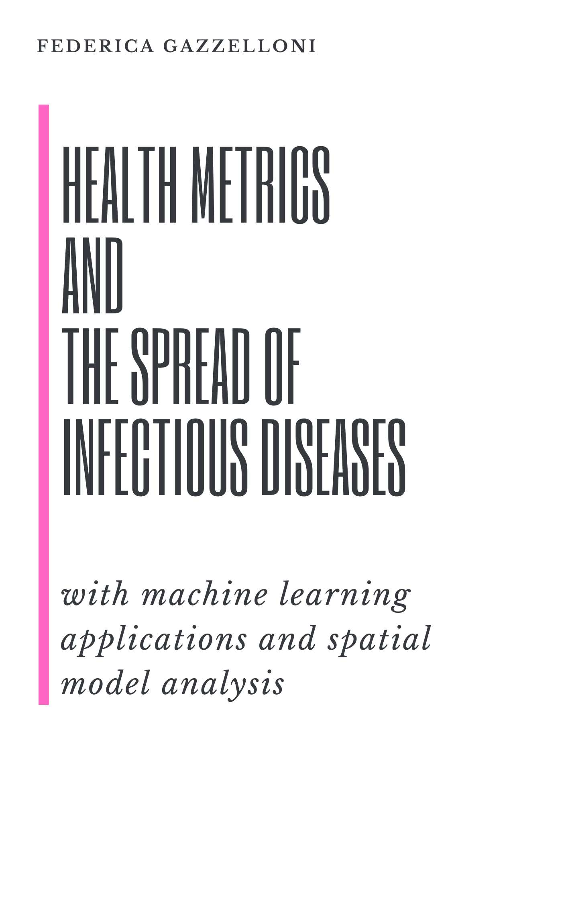

Health Metrics and the Spread of Infectious Diseases
Machine Learning Applications and Spatial Modeling Analysis with R
Federica Gazzelloni ![]()
Preface

Last updated: 2024-01-28 15:36:10 CET
The book is continuously being refined and expanded.
What is this book
Health metrics and the spread of infectious diseases, with machine learning applications and spatial model analysis are the topics of this book. Here you will find everything you need to analyze the state of health of a country and compare it with that of other countries. You will also be able to evaluate the best model for predicting future trends.
Prerequisite
Before delving into the book, it is beneficial for readers to have a basic understanding of health concepts and terminologies. Familiarity with fundamental statistical concepts can aid in comprehending the metrics discussed. Additionally, a grasp of basic epidemiological principles and awareness of global health challenges will enhance the reader’s engagement. However, it’s important to note that if this knowledge is not already in place, there is a dedicated section in the book that provides the necessary background. Some knowledge of programming, especially in languages like R or Python, can be advantageous for those interested in the technical aspects of health data analysis, which cover a large part of this book. An open mindset and curiosity about the evolving field of health metrics are key prerequisites, as the book covers a spectrum from historical perspectives to modern machine learning applications. Overall, a multidisciplinary approach, combining aspects of health sciences, statistics, and technology, will enrich the reader’s experience.
Acknowledgements
A big thank you to all my friends for their support on this journey.
The author of this book is Federica Gazzelloni, Actuary and Statistician by education and training. She is also a collaborator at the Institute for Health Metrics and Evaluation (IHME), which inspired this work to serve as a manual providing formulas and code for working with health metrics. It guides on how to calculate metrics, analyze the state of health of a population, and deal with data related to the spread of infectious diseases.
All data used in this book are from the Institute for Health Metrics and Evaluation (IHME). GBD Results. Seattle, WA: IHME, University of Washington, 2020. Available from https://vizhub.healthdata.org/gbd-results/. (Accessed January 2023) and the World Health Organization (WHO). Global Health Observatory data repository. Available from https://apps.who.int/gho/data/.
Code of Conduct
Please note that this book is released with a Contributor Code of Conduct. By contributing to this project, you agree to abide by its terms.